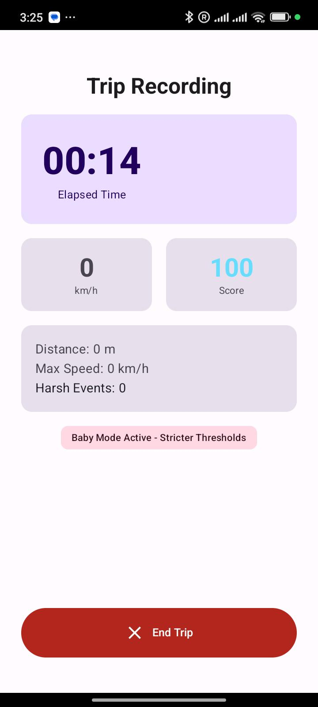

Safe-Driving Telemetry for Families
An Android app that turns your phone's sensors into calm, meaningful feedback about driving smoothness — built for parents and caregivers.
Screenshot

Key Features
Driving Telemetry Engine
Real-time monitoring of speed, hard braking, hard acceleration, and cornering using sensor fusion (GNSS + accelerometer + gyroscope).
Baby Mode
User-activated stricter safety thresholds that prioritise smoothness and jerk reduction for infant comfort. Never automatic — you're in control.
Safe-Driving Score
A 0–100 score computed from harsh-event rate per 100 km, jerk, and speed smoothness. Calm, non-punitive feedback after every trip.
Crash Detection & SOS
Best-effort crash detection with a user-cancellable 60-second countdown before alerting emergency contacts and prompting a 112 call.
Back-Seat Reminder
A prominent "check the back seat" reminder at the end of trips in Baby mode — positioned as a backstop, not a guarantee.
Privacy First
All telemetry computation runs on-device. No raw sensor data leaves your phone. Location is used for speed and routing only — nothing is transmitted without your explicit consent.
- ✓ On-device processing
- ✓ Encrypted local storage (SQLCipher)
- ✓ No account required
- ✓ Export and delete your data
- ✓ GDPR compliant
Tech Stack
Roadmap
MVP
Telemetry Engine, Baby Mode, Trip History, Local Persistence.
v1.1
Road roughness, gradient detection, and arrival sharing.
v1.2
On-device ML scoring and cloud sync.
Built with Kotlin and Jetpack Compose. Entirely on-device. Available on Android.
Baby on Board uses only the sensors in your phone. It does not detect a child — Baby mode is user-activated.